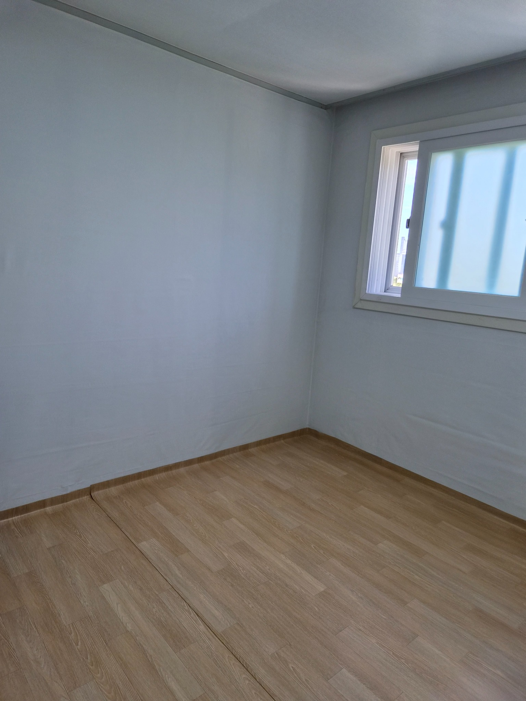
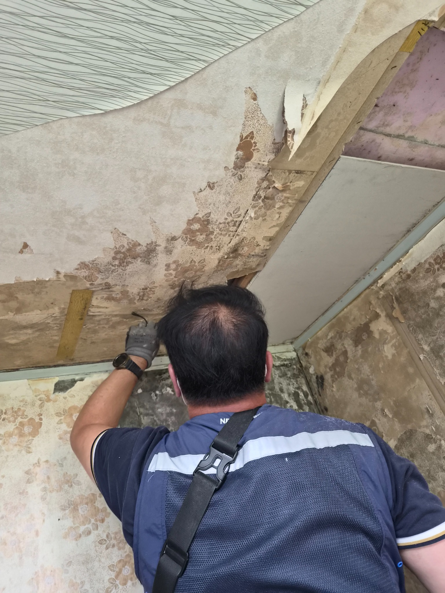
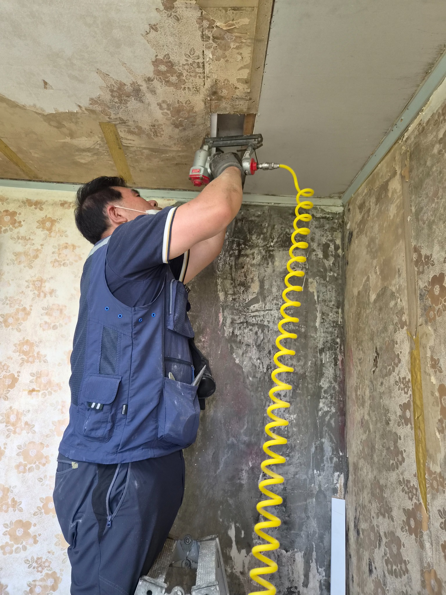
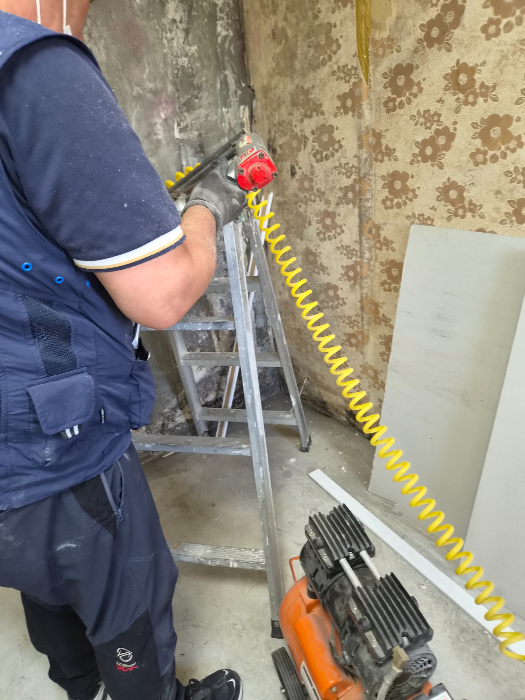
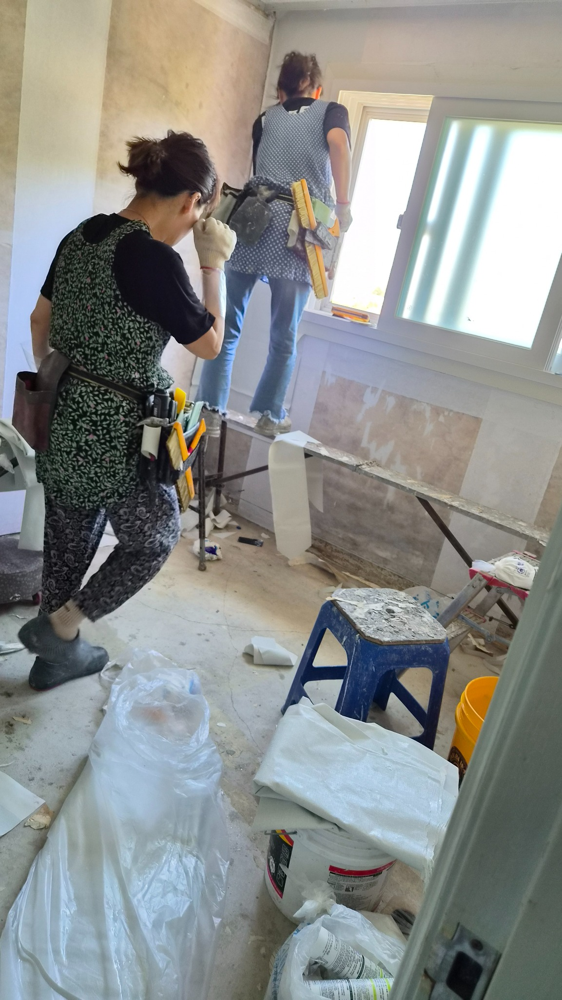
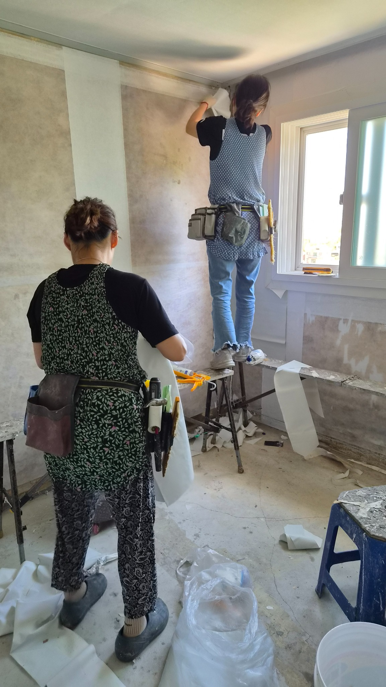
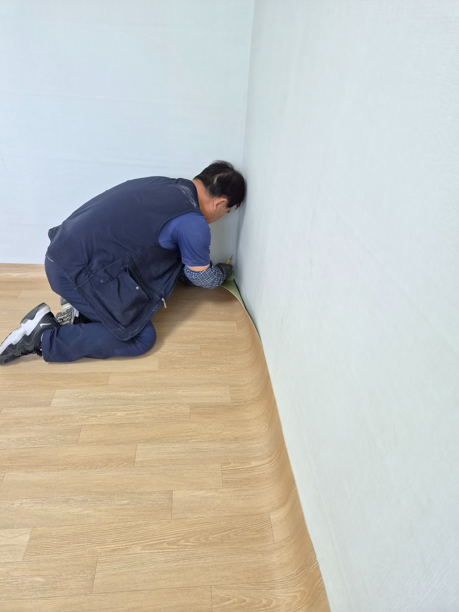
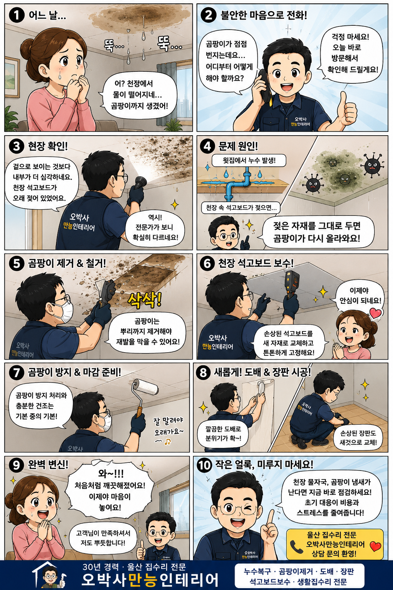

울산 중산동 백산그린타운아파트 천장 누수 곰팡이 복구
윗집 누수로 천장과 벽면에 곰팡이가 생기고, 장판까지 영향을 받은 현장을 곰팡이 제거, 천장 석고보드 보수, 도배와 장판 시공으로 차근차근 복구했습니다.

천장 물자국 하나가 시작이었습니다
집은 하루의 피로를 내려놓는 공간입니다.
그런데 어느 날 천장에 물자국이 생기고 곰팡이 냄새까지 올라오기 시작하면, 고개를 들 때마다 마음이 무거워집니다.
이번 현장은 울산 북구 중산동 백산그린타운아파트 101동에서 진행한 천장 누수 복구 사례입니다.
윗집 누수로 천장 석고보드와 벽면에 곰팡이가 발생했고, 습기가 바닥 장판까지 영향을 준 상태였습니다.
현장 확인 결과
겉으로는 작은 얼룩처럼 보였지만 내부 상태는 달랐습니다.
천장 석고보드가 오랜 시간 습기를 머금고 있었고, 곰팡이도 여러 곳에서 확인되었습니다.
바닥 장판 역시 습기의 영향을 받아 들뜸이 시작되고 있었습니다.
왜 다시 생길까
젖은 자재를 그대로 두고 벽지만 새로 붙이면 곰팡이는 다시 올라올 수 있습니다.
누수 복구는 빨리 덮는 작업이 아니라, 젖은 부분을 정확히 확인하고 정리하는 작업입니다.
곰팡이 제거부터 도배 장판까지
먼저 곰팡이가 발생한 부분을 제거했습니다.
이후 천장 내부 상태를 점검하며 손상된 석고보드 부분을 보수했습니다.
충분한 건조 상태를 확인한 뒤 곰팡이 재발을 줄이기 위한 기본 처리를 진행했습니다.
그 다음 천장면을 정리하고 도배 시공을 진행했습니다.
마지막으로 습기의 영향을 받은 바닥 장판까지 새롭게 시공하며 작업을 마무리했습니다.






작업 후 달라진 집의 분위기
공사가 끝난 뒤 가장 크게 달라진 것은 집 안 분위기였습니다.
천장에 남아 있던 물자국이 사라지고, 곰팡이 흔적도 깨끗하게 정리되었습니다.
새 도배와 장판이 시공되면서 공간 전체가 밝고 단정해졌습니다.
집수리는 단순히 낡은 부분을 고치는 일이 아닙니다.
그 공간에서 살아가는 사람의 걱정을 덜어내는 일입니다.
10컷 웹툰으로 보는 누수 복구 이야기
천장 물자국을 발견한 순간부터 오박사만능인테리어가 현장을 확인하고 복구하는 흐름을 쉽게 볼 수 있도록 웹툰 형태로 정리했습니다.

아파트 윗집 누수 발생 시 꼭 확인하세요
- 먼저 관리사무소에 상황을 알리고 원인 확인을 요청합니다.
- 공용 배관 문제인지, 위층 세대 문제인지 구분해야 합니다.
- 천장 얼룩, 곰팡이, 벽지 변색, 장판 손상은 사진으로 기록해 둡니다.
- 도배 전에 젖은 석고보드와 내부 상태를 먼저 확인합니다.
- 작은 물자국이라도 냄새와 곰팡이가 함께 있다면 빠른 점검이 필요합니다.
울산 누수 복구는 정확한 진단이 먼저입니다
천장 물자국, 곰팡이 냄새, 장판 들뜸이 보인다면 너무 늦기 전에 확인해 보세요.